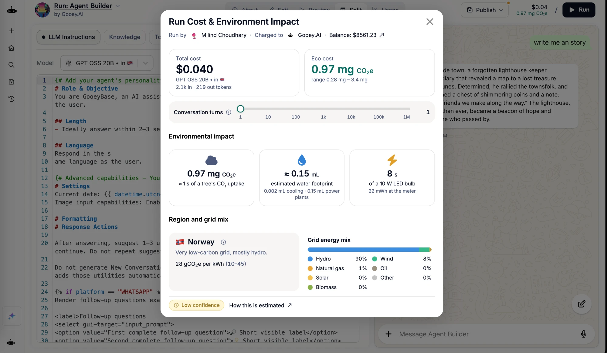
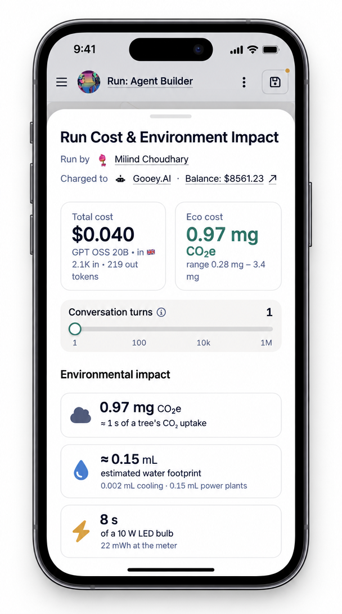

A proposal for making the environmental cost of AI visible.
EcoCost would give consumers and organizations a common way to understand the environmental impact of AI use. A public repository and API would provide estimates of energy use, emissions, and water consumption, allowing AI tools to display environmental cost alongside price and performance. The first version is available now as an open-source Python library, ecocost.
Every AI query consumes electricity and water, but AI users and bot builders lack a common resource for comparing environmental performance across models and server regions. Without that information, they cannot readily factor environmental impact into their choices.
If AI services displayed their environmental impact, users could consider eco-cost when choosing models and providers, alongside accuracy, latency, and price. The proposal assumes that stronger customer demand for environmental performance would encourage AI labs and hyperscalers to optimize for it.
A public repository would collate the data behind per-request estimates of energy, emissions, and water use. Data scientists, researchers, hyperscalers, and AI research agents would contribute data. People and agents would continually curate the information to improve confidence in the estimates. Connected AI platforms would let consumers and organizations evaluate eco-cost for each run, compare models and server regions, and track the impact of their AI usage over time.
Researchers, data scientists, and organizations would develop evaluation and estimation methods, publish data, and perform monitoring.
Like-minded product and platform providers would publish data and make eco-cost information accessible to users.
Funding would establish the repository and API and support research.
Participating providers would contribute vetted inference energy data.
The Gooey.AI mockups show environmental information within an AI workflow. A compact label beside the run price surfaces emissions, and an expanded view explains resource use, compute time, and the location and energy mix behind the estimate.



The figures in the mockups come straight from ecocost. The run used GPT OSS 20B on nScale, with 2,100 input and 219 output tokens. It came to 0.97 mg CO₂e (likely range 0.28–3.4 mg), about 0.15 ml of water (almost all of it at the power plant), and 22 mWh of electricity, about 8 seconds of a 10 W LED bulb. A slider scales the figures by the number of conversation turns.
The request ran in Norway, where ecocost's grid data shows about 90% hydro and 8% wind, at 28 g CO₂e per kWh (range 10–45). nScale doesn't publish its cooling water use or serving overhead, and the hardware's embodied carbon is assumed too, so the likely range spans 12× and the label shows low confidence, with a link to how the estimate is made.
The proposed architecture connects source data to estimates through five stages. Its shared principles are transparency, confidence, documented methodology, energy data that accounts for region, and eco-cost breakdowns for individual models.
Inputs would include academic research, industry reports, websites and blogs, operational data and efficiency metrics from data centers, and public disclosures from hyperscalers and model providers. Example sources include Epoch AI, nScale, Google, Anthropic, and OpenAI.
Human contributors would review data, update methodologies, and validate results. Research agents would automate collection and analysis across the web. Providers could directly submit environmental data, regional information, and infrastructure details.
The first version is live:
GooeyAI/ecocost
on GitHub, installable with pip install ecocost.
It is community-maintained and open to pull requests, and it
contains:
Planned additions include research agents that gather new data and automated checks for anomalies.
A standard interface lets tools submit information about an AI request and receive environmental estimates. See the contract below.
Gooey.AI, environmental dashboards, chat interfaces, and partner applications would display the estimates. Users could explore and compare impact, track usage, and expand a label to see model-level details such as tokens, usage, cost, eco-costs, and confidence.
The ecocost library has one function, estimate(). It
takes the details of a single request and returns eco-cost
estimates. The example values below come from ecocost 0.2.0
(method 0.3.0) for GPT-4o on OpenAI's API with 700 input and 300
output tokens. To estimate a run that uses several models, call it
once per model and add up the results. See the
full API reference, or try it below.
| Field | Example or purpose |
|---|---|
| Model |
gpt-4o. Provider-specific model ids resolve to
the same model.
|
| Token counts | Input tokens (700), output tokens (300), and cached input tokens (optional) |
| Provider |
openai. Optional: ecocost can infer it from the
endpoint URL or, for closed models, from the model's vendor.
|
| Grid region |
Optional. A grid id such as US-VA or
FR, if you know where the request ran.
Otherwise ecocost uses the provider's known sites.
|
| Field | Example or purpose |
|---|---|
| Carbon | 0.099 g CO₂e (likely 0.025–0.37 g). Split into operational emissions, from generating the electricity, and embodied emissions, from manufacturing the hardware. |
| Energy | 0.26 Wh at the data center meter (likely 0.075–0.88 Wh) |
| Water | 0.95 ml consumed (likely 0.15–6.1 ml): 0.06 ml for data center cooling and 0.89 ml at the power plant |
| H100-equivalent compute time | 0.79 seconds (likely 0.25–2.2 s) |
| Confidence | Low. The likely range spans 15×. The result lists the assumed inputs behind that rating: undisclosed model size, chip utilization, serving overhead, and embodied carbon. |
| Region and grid energy mix | US, 373 g CO₂e per kWh (195–591 across OpenAI's candidate sites). Largest source: natural gas (40%). |
| Worst case | The same figures with every input set to its extreme at once |
| Provenance | Review status of each model, provider, region, and hardware record used |
The compact example label combines carbon, water, energy, and compute time. An expanded view would add the assumptions and context needed to interpret those figures, including region, grid energy mix, confidence, and the likely range, with optional detail by model.
This playground runs the real ecocost Python package in your browser, so nothing is sent to a server. Pick a model and provider, set the token counts, and the estimate updates as you go.
Loading the playground…
EcoCost is at an early stage. The first version of the library is public, and we're looking for researchers and data scientists, product and platform teams, funders, and hyperscalers to help improve its methodology and data, and to add more models and providers.
Browse the code, methodology, and data. You can open a pull request to correct a figure or add a model or provider.
GooeyAI/ecocost